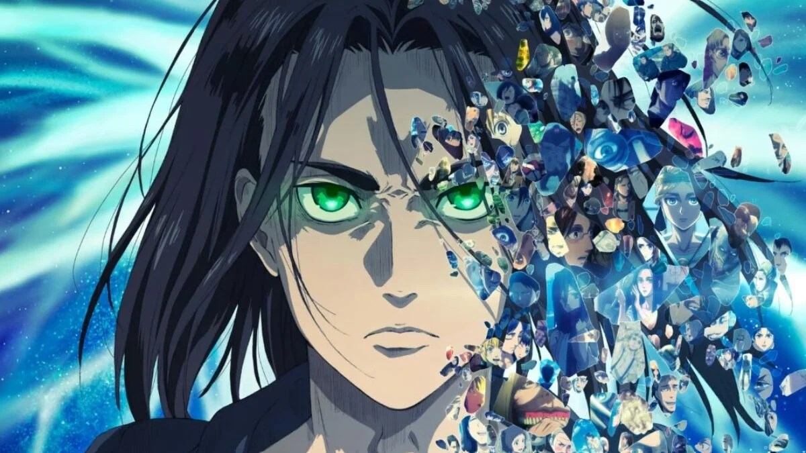

Attack on Titan Final Season - Parte 4 ya tiene fecha y nuevo tráiler
¡El final de una era está aquí! Attack on Titan (Shingeki no Kyojin) llega a su última parte con una conclusión épica que promete resolver todos los misterios de la serie y cerrar la historia de Eren, Mikasa y Armin.
⚔️ ¿Qué podemos esperar?
- Batallas épicas entre la humanidad y los titanes.
- Revelaciones impactantes sobre el pasado y el verdadero objetivo de Eren.
- Un desenlace lleno de emoción que marcará el destino de todos los personajes.
🎥 Tráiler oficial
No te pierdas el tráiler de la última temporada aquí:
📢 Conclusión
Attack on Titan ha sido una de las series más influyentes de los últimos años, y su final promete ser uno de los más memorables en la historia del anime.
⬅ Volver a noticias